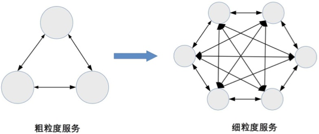

33-深入理解微服务架构：银弹 or 焦油坑？
微服务与SOA关系
从以下几个方面来说明二者的关系：
服务粒度
SOA的服务粒度要更粗一点，微服务的粒度要细一点。对于大型企业来讲，“员工管理系统”是SOA的一个服务，而如果采用微服务架构，则“员工管理系统”会拆分成更细的服务，比如“员工信息系统”、“员工考勤系统”等。
服务通信
SOA采用ESB作为服务间通信的关键组件，负责服务定义、服务路由、消息转换、消息传递、总体上来说是重量级的实现。微服务推荐使用统一的协议和格式，例如restful协议、rpc协议等，无须ESB的重量级实现。
服务交付
SOA对于服务交付没有特殊要求，SOA更多是为了兼容已有的系统。而微服务的架构理念是“快速交付”。相应的要求采用自动化部署、自动化测试、持续集成等敏捷开发相关的最佳实践。如果没有这些基础服务的支撑，当微服务的规模一大的话，就无法做到快速交付。
应用场景
SOA更适用于庞大、复杂、异构的企业级系统，这类系统的典型特征就是很多系统已经使用很多年，采用不同的企业级技术，有的是内部开发、有的是外部购买的，无法完全推倒重来或者进行大规模的优化和重构。因为成本太大，而只能使用兼容的方式进行处理，而承担兼容任务的就是ESB。
微服务更适用于互联网系统，这类系统业务变化快，需要快速尝试、快速交付。同是都是基于web，虽然开发的技术差异很大，但对外提供的接口基本都提供http restful风格的接口，无需考虑在接口层进行类似soa的esb转换处理操作。
综上分析，SOA与微服务的对比如下：
| 对比维度 | SOA | 微服务 |
|---|---|---|
| 服务粒度 | 粗 | 细 |
| 服务通信 | 重量级，采用ESB | 轻量级，例如：http restful |
| 服务交付 | 慢 | 快 |
| 应用场景 | 企业级 | 互联网 |
SOA和微服务是二种理念的架构模式，并不存在熟优熟劣的问题，只是应用场景不同而已。
微服务的坑
很多企业在实践中不加思考就采用了微服务，即不考虑团队的规模、也不考虑业务的发展，也没有考虑基础设施的支撑，只是觉得微服务好就赶紧实施，以为只要实施微服务什么问题都解决了。但其实这其中有很多的坑。
服务划分过细，服务间关系复杂
服务划分过细，虽然单个服务的复杂度下降了，但是系统整体的复杂度就上升了。微服务把系统内的复杂度转移到了系统间的复杂度了。
从理论上分析，n个系统的复杂度为:n*(n-1)，整个系统的复杂度随着微服务数量的增加呈指数级别的增加。

服务数量太多，团队效率急剧下降
微服务的微本身就是一个陷阱，很多团队把服务拆的很细，可能一个团队的规模只有5-6人，但是却拆出了30多个服务，每个人要维护5个服务。这样做给效率带来了很大的影响，一个简单的需求开发可能需要涉及多个微服务，光是服务间的接口就有5、6个，无论是开发、测试、部署都需要工程师不断在服务间进行切换。
- 开发工程师要设计多个接口，打开多个工程， 调试时要部署多个程序，提测时要打多个包。
- 测试工程师要部署多个环境，准备多个微服务的数据，测试多个接口。
- 运维工程师每次上线要操作多个微服务，并且微服务之间可能还有依赖关系。
调用链太长，性能下降
由于微服务间的调用都是通过http或都rpc调用，每次调用必须经过网络，一般线上的接口调平均响应时长50ms，如果一个用户请求要经过6次微服务的调用，则性能损耗就是300ms了。这在高性能的场景下是难以满足要求的，为了支撑业务请求，可以要大幅增加硬件，这会导致硬件的成本大量增加。
调用链太长，定位问题困难。
系统拆分成微服务后，一次用户请求需要多个微服务进行协同处理，任意微服务的故障都将导致整个业务失败。由于微服务的数量较多，且存在扩散现象，快速定位到底是哪个微服务故障是一件复杂的事情。
如果有多个微服务出现故障，定位则更加困难。
没有自动化支撑，无法快速交付
如果没有相应的自动化系统作支撑的，都是靠人工操作的，那么微服务不但达不到快速交付的目的，甚至不如一个大而全的系统效率高。例如：
- 没有自动化测试支撑，每次测试时需要测试大量的接口。
- 没有自动化运维支撑，每次部署6-7个服务，几十台机器，运维靠敲shell命令部署。
- 没有自动化监控支撑，每次出现问题，都需要人工查几十台机器几百个微服务的各种状态和各种日志文件。
没有服务治理，微服务数量多了管理就复杂
随着微服务种类和数量越来越多，如果没有服务治理系统进行支撑，微服务提倡的lightweight就会成为问题：
- 服务路由：假设某个微服务有60个节点，部署在20台机器上，那么其依赖的微服务如何知道这个部署情况。
- 服务故障隔离：假设上述的60个节点有5个节点出现故障，依赖的微服务如何处理这些情况。
- 服务注册和发现：同样上述的例子，如果要从60个节点扩充到80个节点，或者从60个节点缩容到40个节点，新增或减少的节点如何让依赖的服务知道呢?
如果以上总量都由人工去管理，整个系统将一片混乱，最终的解决方案必须使用自动化的服务管理系统，这时候就会发现，微服务的lightweight也发展成了像SOA的ESB的几乎一样复杂度的系统。